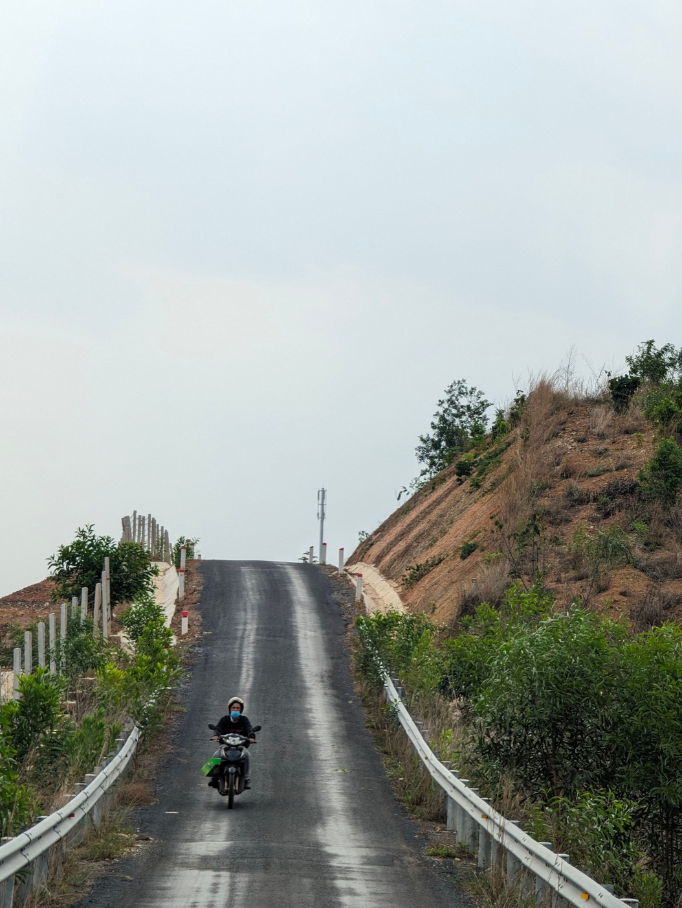
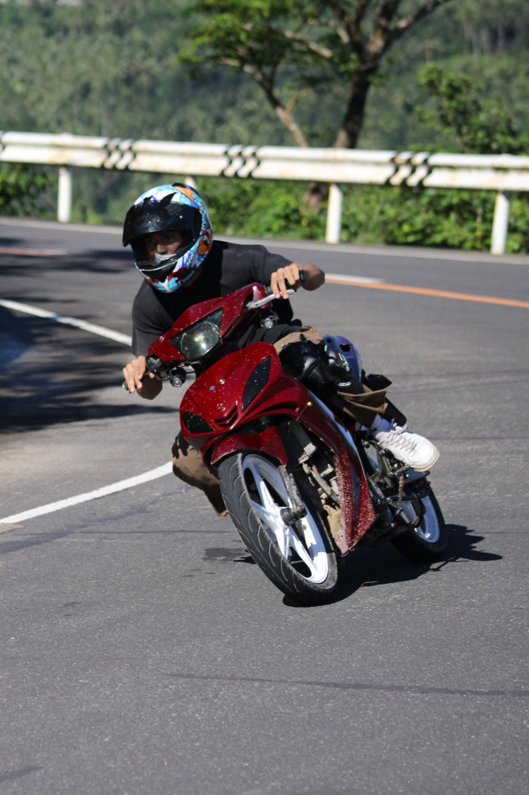

Как ездить в гору и со спуска на байке 50cc

Пятидесятикубовый байк рассчитан прежде всего на город. С умеренными подъёмами исправный автомат справляется, но требует запаса дистанции и спокойной оценки нагрузки. На крутом уклоне скорость будет ниже — это нормально.
Перед подъёмом
Набери ровную безопасную скорость заранее и держись правее, не мешая более быстрому транспорту. Не начинай обгон перед подъёмом: тяга может быстро закончиться. Чем тяжелее водитель, пассажир и багаж, тем заметнее потеря скорости.
Как работать газом
Держи газ ровно, без постоянных резких открытий и закрытий. Если мотор громко работает, а скорость продолжает падать, не пытайся бесконечно «выжимать» его. Выбери безопасное место для остановки и дай технике остыть.

Поворот на подъёме
Смотри в выход из поворота, не режь встречную полосу и не останавливайся посреди слепого участка. Песок, листья и мелкий камень возле обочины снижают сцепление. Корпус держи спокойно, без резких переносов веса.
Главная ошибка на спуске
Не разгоняйся только потому, что байк легко катится вниз. Скорость должна позволять остановиться в пределах видимого участка. Тормози заранее и плавно обоими тормозами, не зажимая один рычаг до блокировки.
На длинном спуске не держи тормоз постоянно с максимальным усилием: он нагревается и может работать хуже. Снижай скорость короткими контролируемыми торможениями, сохраняя большую дистанцию.
Пассажир и багаж
Перед сложным маршрутом честно оцени возможности 50cc. Вдвоём и с грузом подъём становится заметно тяжелее, а тормозной путь на спуске увеличивается. Для крутой или длинной горной дороги лучше выбрать другой маршрут или более подходящий транспорт.
Дождь меняет всё
На мокром уклоне уменьши скорость ещё до поворота. Разметка, металлические крышки, листья и гладкий бетон становятся скользкими. После сильного ливня возможны грязь, камни и вода поперёк дороги — поездку разумно отложить.
Когда разворачиваться
- байк теряет скорость до небезопасной;
- появился запах перегрева;
- тормоза стали мягкими или непривычными;
- начался сильный дождь или туман;
- дорога повреждена либо закрыта.
Для обычных поездок вокруг города посмотри наши маршруты из Нячанга.